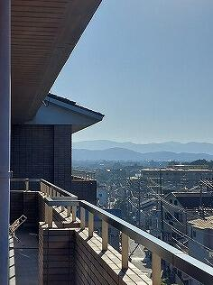

SAGANO BLOG
- >
- SAGANO BLOG
- >
- 日々の様子
{kind=link}
{kind=link}
{kind=link}
2022年11月04日
{kind=link}
京都府の広報紙『きょうと府民だより』11月号の特集「あなたにとって文化とは？ 高校生が語る文化の魅力」で、嵯峨野高校の狂言部・軽音楽部の生徒が取材を受け、"自分にとっての文化とは何か"などについてコメントを寄せました。
11月は、文化の日(3日)や古典の日(1日)など、文化にちなんだ行事やイベントの多い時期です。
『きょうと府民だより』から、文化系の部活動に取り組む高校生の声を聞きたい、その例として、伝統文化にかかわる狂言部と、新しい文化にかかわる軽音楽部を取材したいとの依頼がありました。
取材当日は、それぞれ数人の生徒が、自分にとって文化とは何か、また狂言部や軽音楽部の魅力などについて、コメントを書いたり記者の方に話したりしました。なかなか含蓄のあるコメントも聞かれますので、ぜひ、府内各戸に配布される『きょうと府民だより』をお読みください。
『きょうと府民だより』の配布等については、京都府のホームページを参照してください。リンク先には、全ページが公開されています(pdfファイル)。
{kind=link}
{kind=link}
{kind=link}
{kind=link}
{kind=link}
2022年10月31日
校内の木々も色づき始め、秋も深まりつつあります。季節の進行とともに高校生の学びも深まり、実りの時期を迎えます。
特に高校3年生はいよいよ学業の修了期、一定の完成形へ。
{kind=link}
{kind=link}
以下は高校3年生、世界史の授業の一端です。
・有名なアメリカの"ニューディール政策"は連邦最高裁判所から違憲判決が出されている。大統領肝いりの政策になぜ憲法違反という判断を下したのか？
・大日本帝国の真珠湾攻撃、その報を受けて米・英・ソ・中の首脳はどう思ったか、各国の指導者の思惑を想像し、そこから太平洋戦争とは何だったのかを考える。
・1945年２月のヤルタ会談ではアメリカ大統領はソ連の対日参戦を期待しているが、７月のポツダム会談中にその考えは変わる。なぜか？
教科書に記述された基礎的な史実をもとに、生徒たちは考え、自分なりの解答を導き出します。もちろん期末テストに「...を論述せよ」と問われることへの対策でもあり、さらには大学入試への対策でもあります。ただ彼ら、彼女らの好奇心はそれにとどまりません。
{kind=link}
「教科書を読むと、社会主義とファシズムは対極の様に思えるのですが、同質にも見えます。どのように整理すればよいのでしょうか？」
「東京裁判で日本の指導者は何を根拠に裁かれたのでしょう？なぜ連合国は裁かれていないのですか？」
ある日の３年生からの質問です。一言で回答できない難問（良い質問）が増えてきます。生徒が徐々に肩を並べつつあることを実感させられます。「嵯峨野高校生」も深まる秋です。
{kind=link}
{kind=link}
2022年10月14日
2学期の中間テストも終わり、テスト返却が行われています。
教科担当者がテスト後、教室に入る時、封筒（テスト入り）を持っているか、いないか（採点ができたか、まだできていないか）で、生徒の表情、吐息、複雑な反応が見えます。
「返ってくる」期待半分、一方で結果を見たくない気持ちもあり
いくつになっても、何回経験してもテストは嫌なものです。
結果に一喜一憂するだけでなく、これまでを振り返り、これからを考える糧となればよいのですが。（これがなかなか難しい）
わかっていたのに（なぜあの時は書けなかったのか？）
今度こそ
教室内に様々な思いが交錯します。
{kind=link}

{kind=link}
HR教室ベランダから見える今日の空
2022年10月07日
10月７日ＰＴＡ制服リユースを行いました。約180名の生徒が参加、大盛況でした。卒業生等から寄附いただいた制服を大切に受け継いでほしいと思います。
また、制服リユース実施に向け、在庫確認などの事前準備、当日の運営などＰＴＡ役員の方々に大変お世話になりました。ありがとうございました。
{kind=link}
{kind=link}
{kind=link}
{kind=link}
{kind=link}
{kind=link}
2022年09月26日
うれしい便り 其の1 先輩と繋がる
先日sagano blogの「先輩からのメッセージ」に寄稿していただいた本校の卒業生から、ブログ掲載のお礼の便りが届きました。そのメールに
「先日の体育祭のブログを拝見しました。3年生の皆さんはコロナによって奪われたものが大きく、つい「かわいそう」と感じてしまいがちですが、こんな世界を切り抜けた皆さんは、きっとまた違った力を発揮してくれることだと思います」と綴られていました。
いよいよ受験に向けて、"良い意味での緊張感"が高まりつつある３年生にとっては、出逢ったことのない先輩からのエールです。
{kind=link}
{kind=link}
うれしい便り 其の２ 後輩と繋がる
しばらく連絡のなかった卒業生から、突然便りがありました。
彼女は大学卒業後、教職に就き、何年か後にパートナーの仕事の関係で関東に転居しました。そして新天地での生活にもようやく慣れ、お子さんも少し手が離れたこともあり、もう一度教職を目指すことにしたそうです。先日自らが経験した面接試験でのやりとりを綴ってくれています。
面接を受けた学校の教頭先生から「嵯峨野高校の京都こすもす科の卒業ですか」「最近注目の高校ですね」「いろいろと聞かせてください」と言われ、その後の面接はとても良い雰囲気になったそうです。
彼女曰く「新卒の受験の時は"こすもす？" 変わった名前ですね、と言う話題ばかりでした。嵯峨野卒業生あるあるです。」
「しかし今回は後輩の皆さんの頑張りのおかげで就職試験に有利になったかもしれません。在校生の皆さんや先生方に感謝です」
時間も場所も飛び越えて同窓生が繋がります。
{kind=link}
2022年09月21日
SAGANO BLOGにお立ち寄りいただきありがとうございます。
日々の学校の様子、様々な学校行事、本校独自の学習さらには部活動など様々な分野の"旬"を掲載しています。
加えて今年は本校の卒業生の方から、御自身の進路選択について、仕事・研究のやりがいなどのメッセージを送っていただいています。
本ページ上部のタグ「卒業生より」を選び、過去の掲載文もお読みください。
高校生はもとより、中学生の皆さんにとっては大いに参考になり、また我々教職員（大人）にも考えさせられる文章があります。
{kind=link}
{kind=link}
{kind=link}
{kind=link}
{kind=link}
{kind=link}
{kind=link}
{kind=link}
2022年09月16日
図書館より、とこのは祭期間中の図書委員会活動について紹介します。
現在「本の福袋」の貸出を実施しています。
3年図書委員が、それぞれテーマを決めて本をセレクトし、福袋を作成しました。「こんな結末聞いていない！」「近くて遠い未知の世界」「人類モ不死身ニナレル？」など、様々なテーマの福袋が用意されています。
{kind=link}
{kind=link}
図書館入口前の廊下で展示。どの福袋にしようかな？
{kind=link}
{kind=link}
{kind=link}
館内では、1・2年図書委員による企画展示がおこなわれています。
{kind=link}
【想像あらすじ】
タイトルと表紙から、あらすじを想像して創作しました。まるで本物のような紹介を楽しみます。（もちろん、裏面に本来のあらすじもあります！）
{kind=link}
{kind=link}
【本を内容を実践してみた！】
実験やハンドメイドの本を元に、実際に作成しました。ジオラマやオリガミの他、数学パズルを作ってきた図書委員さんもいます。
{kind=link}
【嵯峨野高生のおすすめ本】
１・２年図書委員によるおすすめ本紹介POPです。紹介された本のリストは、本校図書館のページから見ることができます。
図書館は、図書委員をはじめとした生徒たちの活動と先生方の協力に支えられています。展示や企画のなかから、様々な人の視点や感性を見つけて楽しんでください。
2022年09月14日
{kind=link}
誰が決めたのか、9月14日は「コスモスの日」だそうです。
勝手に本校にゆかりのある様な気になります。
文化祭も終わり、平常授業を開始しています。残念ながら、国内の感染者数は依然として高止まり傾向、本校生にも感染者は出ています。
十分とはいきませんが授業配信など工夫をして、平常の学校生活を維持しています。
週末には中学生対象の進学説明会を開催します。昨日の放課後、生徒のボランティアスタッフが当日の配付資料準備をしてくれました。
本校茶室「里仁軒」横の「百日紅（サルスベリ）」はまもなく「100日」なのか、開花期も終盤を迎えようとしています。季節は着実に秋へ。
高校３年生にとっても、中学３年生にとっても大切な季節です。
今説明会も感染対策をとりながら、開催すべく準備を進めています。
お申込みいただいた中学3年生の皆さん、保護者の皆さまも、体調管理にはくれぐれもご留意いただき御参加ください。
2022年09月09日
今日は２学期に入り初めてのアカデミック・ラボ活動日です。数学ラボでは、１学期中に編成した探究班に分かれて各テーマに関するレポートを夏休み中にまとめてもらいました。本日のラボはメンバー内でのレポートの情報交換から開始しました。
交流を通じて各生徒がおぼろげに抱いていた課題点が少しずつ整理されていきます。数学ラボでは、そういった課題点について、いかに数学的な切り口を見出し、かつ自分達が学んできた数学の知識を手法として探究活動に結び付けていくかが高い壁となって立ちはだかります。
ふと見ると、１つの数式を作り、それについてメンバーで議論していました。「安全性」といったキーワードも見受けられます。今後どのように数学的な活動が膨らんでいくのでしょう。
千里の道も一歩からです。
最後に次回の活動までに各自が調べておくことを整理し、分担することなどをお互いに確認しました。担当教員の指示ではなく、生徒達が自ら考えて今後の方向性を設計していく様子はとても頼もしい思いがしました。
{kind=link}
{kind=link}
2022年09月08日
文化祭明け、生徒も教員も喧噪のあとの空虚感の中で、平常授業を開始しました。
1970年代の吉田拓郎さんは（当時の世相から）"政治闘争"に
1990年代の桑田佳祐さんは"恋愛"に、
その、"たぎる思い"をぶつけたものになぞらえて、"祭りのあと"の空虚感を詠っておられます。
自分の思いを他人に伝えることのむつかしさ、そして通じ合えた時の喜び
なんとなく集まっていたクラスが、本当の意味でクラスになれたこと
目指した結果は得られなかったものの、大きな「何か」が得られた
文化祭って、本当に良いものです。
「人生の目的は、何をなすかではなく、何をなそうと胸を焦がすかである」（ハリール=ジブラーン）
費やした熱量に比例して、気怠さは増幅します。
ただ、上記の曲も、その虚しさに折り合いをつけて、次への胎動を歌い上げています。
形あるものは即座に解体し、"充実感"を各自の胸に仕舞い込み
日常への回帰、再スタートを切りましょう。
{kind=link}
{kind=link}
{kind=link}
{kind=link}
昨日のうちに学習環境を整え
始業前にはいつものように、早く登校して、自習している３年生もいました。
{kind=link}
{kind=link}

2022年09月02日
文化祭準備期間で大切なことは「切り替え」
午前中は授業に集中し、午後の活動時間はみんなで協力して
1日の活動時間の終わりには、明日の授業に向けて、教室の整頓が必要です。
しかし終了時刻が近づいても、絵の具が乾いていないことも多々あります。そんな時は教室に広げて、夜間に乾かしておいて、翌朝少し早い目に登校することもあります。
{kind=link}
{kind=link}
翌朝登校してみると微調整が必要だったり
もう少し乾かす時間が必要だったり
{kind=link}
2022年08月26日
「青春は"密"なんです。」 心に響く表現でした。
思わず 「その通り」
夏季補習も終わり、週明けからは正式に授業も始まります。
制限（感染対策）は依然として続きますが
やらねばならないこと（教科学習・部活動他）に加え、さらに自主的に様々な活動に取り組んでいます。
誰かに何かを言われるのではなく、主体的に...
{kind=link}
2022年08月22日
伝統を受け継ぐ
「この度はお忙しい中、早速に校歌楽譜をお送りいただきまして、誠にありがとうございます。」
本校同窓（9期生）の方からご丁寧なお礼状をいただきました。
過日、母校を懐古され、校歌（楽譜）送付の依頼があり、本校の現職員が対応したことへの返礼です。
「あたりは一面畑だったように思います。周りの環境は変わりましたが、校章と校歌は変わっていません。」と綴られた御礼状には、当時の写真も同封され、在学中の佳き思い出の一端が窺えます。
移築され、現存するお茶室「里仁軒」での茶道部の思い出には、和菓子が食べられることが入部理由であった、との（高校生らしい）微笑ましいエピソードも
末文には
「素晴らしい先生や校風、雰囲気 三年間でしたが私にとって嵯峨野高校は誇りです」と結ばれています。
現在同門に集う生徒、教職員にとって、大先輩のこの言葉は、大いに励みとなり、また襟を正す機会となりました。
先人の「誇り」に恥じることなく、継承さらに発展させることが現役世代の務めです。部活動然り・母校然り、さらには郷土、現職そして母国然り
現役在校生諸君が、卒業後も同じように母校を懐古してくれることを願う、夏の終わりです。
{kind=link}
{kind=link}
{kind=link}
{kind=link}
{kind=link}
〒616-8226
京都市右京区常盤段ノ上町15番地
TEL 075-871-0723 FAX 075-871-0724
E-mail [email protected]
Copyright (C) 京都府立嵯峨野高等学校 All Rights Reserved.